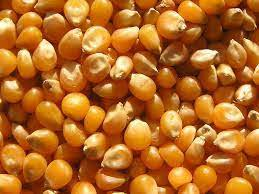
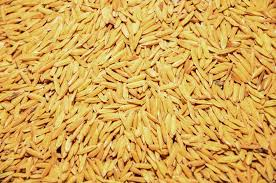

Maïs
Nos variétés de maïs sont IRAT 200 et MEVA. Ce sont des variétés de qualité supérieure qui ont été testées et approuvées par les agriculteurs.
Riz pluvial
Nos variétés de riz pluvial sont x265, FOFIFA 141 et X264. Ce sont des variétés de qualité supérieure qui ont été testées et approuvées par les agriculteurs.
Riz irrigué
Nos variétés de riz irrigué sont B22. Ce sont des variétés de qualité supérieure qui ont été testées et approuvées par les agriculteurs.
Haricot

Nos variétés de haricot sont ranjonomby et autres. Ce sont des variétés de qualité supérieure qui ont été testées et approuvées par les agriculteurs.